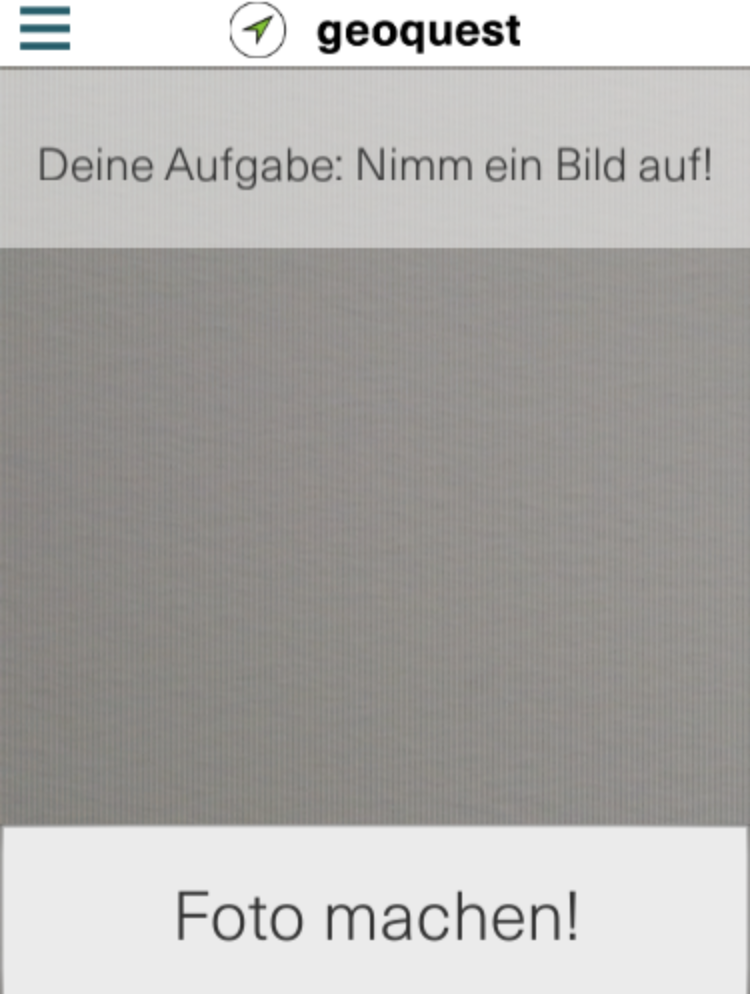
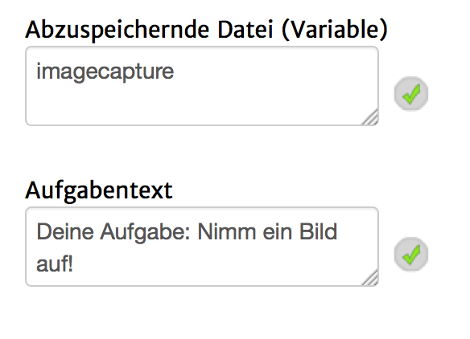

Mit diesem Seitentyp ist es möglich, den Spieler aufzudordern ein Foto mit Hilfe der im Mobilgerät integrierten Kamera aufzunehmen.
Dieser Seitentyp sieht unter iOS und Android nicht identisch aus, da unter iOS eine native Kamera-Ansicht benutzt wird.
Auf Adnroid sieht es ungefähr so aus:

Folgende Einstellungsmöglichkeiten gibt es für diesen Seitentyp:
|  | Abzuspeicherne Datei (Variable): Der Name der Variable in die die Bild-Datei gespeichert werden soll. Im späteren Verlauf der Quest kann die Datei über diesen Namen und dem Prefix "@_" z.B. in einer "Bild mti Text"-Seite angezeigt werden. Bei Benutzung des Standardwertes "imagecapture", müsste also als Bild in der "Bild mit Text"-Seite "@_imagecapture" eingegeben werden. Im aktuellen Zustand kommt es evtl. zu Spiegelungen und Drehungen des Fotos. Aufgabenbeschreibung: Der Text, welcher im oberen Bereich der Seite zu sehen ist. Dieser wird aktuell nur unter Android angezeigt. |